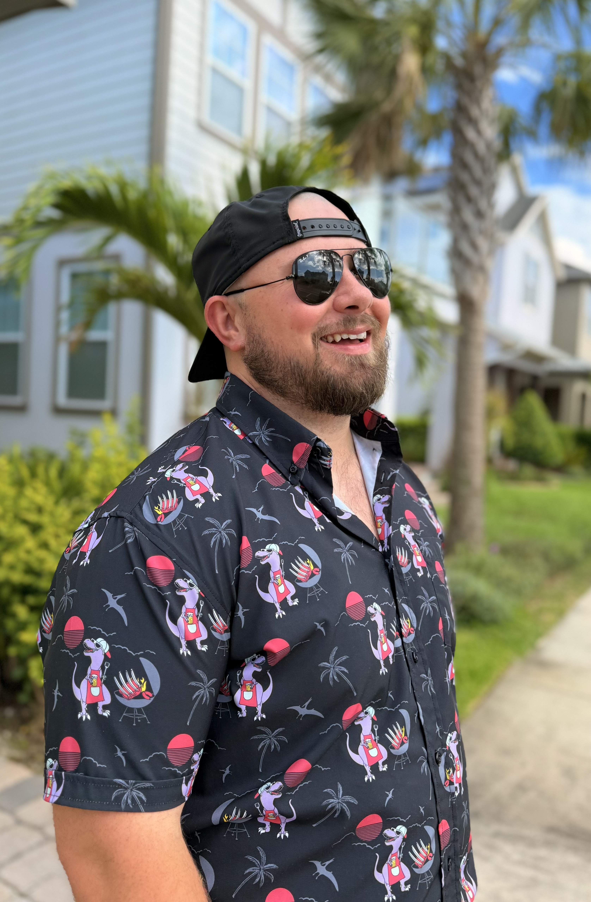

User-Centered Thinking
I start by understanding the people, context, and friction behind a problem before jumping to a solution.
THE CREATIVE MAKER
I’m Tyler Yates — an Engineering Planner and Scrum Master with a software engineering background. I work across users, teams, and technology to clarify problems, make tradeoffs, and move ideas toward better outcomes.
Orlando, FL · Product · Technology · Agile

Case Studies
Product work focused on turning real problems into better decisions.
A blend of user empathy, technical depth, and a bias for action.
I start by understanding the people, context, and friction behind a problem before jumping to a solution.
My software background helps me work closely with technical teams, understand tradeoffs, and connect product decisions to implementation.
I bring structure to ambiguity — aligning teams, clarifying priorities, and keeping work moving toward meaningful outcomes.
Principles
Frameworks are useful. The thinking behind the decision matters more.
Understand who is experiencing the problem, why it matters, and what evidence supports it.
Product is rarely about doing everything. I want teams to understand what we are prioritizing, what we are not, and why.
A launch is not the finish line. Measure what happens, learn from real behavior, and keep improving.
Background
I started on the technical side of products, but I kept finding myself more interested in the questions that came before the build.
Those questions are what pulled me toward Product Management.
Tools I work with: Jira · Confluence · Figma · Analytics · AI-assisted workflows
Personality
The things that keep me curious, motivated, and moving forward.
My wife and children keep me grounded and remind me what really matters.
I’m always learning — about people, technology, and the world around me.
I love turning ideas into real things, whether it’s a product, a process, or a personal project.
Say Hello
I’m open to Product Manager opportunities and always up for a good conversation about products, technology, and interesting problems.